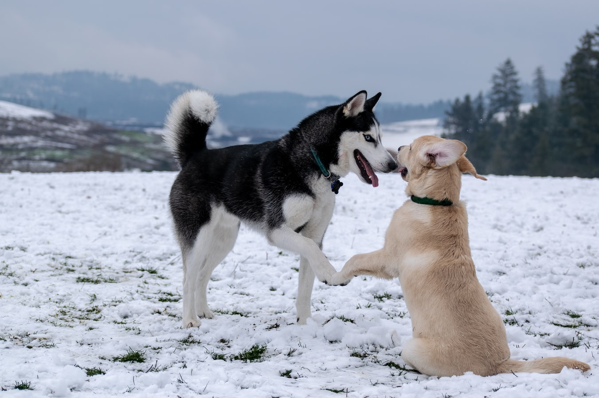

Summit Farm's Championship Alaskan Dog Breeds
Summit Farms is recognized for producing outstanding Alaskan dog breeds such as Malamutes and Huskies. Our dogs come from champion bloodlines and excel in every venue. We breed selectively for structure, temperament, and ability. Summit Farms dogs have been placed in homes around the world and make excellent working dogs and family companions. These are special puppies from of our finest sires and dams. If you have never owned an Alaskan dog this breed is not for everyone. See Facts About Alaskan Dog Breeds for more information.
We are an AKC Breeder of Merit, and are committed to meeting and exceeding the guidelines set forth by the AKC regarding membership, health screening, and animal registration. We are also proud members of the American Alaskan Dog Association.
Summit Farms normally has the following breeds:
Click on a link above to learn more about each breed